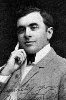

Country:United States, 14 minutes
Spoken languages:
Genres:Horror, Sci-Fi, Fantasy
Director(s):J. Searle Dawley
Writer(s):J. Searle Dawley, Mary Shelley
Video Codec:Unknown
Number: 1525


Certification:
Storyline:
Frankenstein, a young medical student, trying to create the perfect human being, instead creates a misshapen monster. Made ill by what he has done, Frankenstein is comforted by his fiancée; but on his wedding night he is visited by the monster.
Cast: 
Medium: Original DVD,
Comments: w/ Nosferatu
Loaned: No
Aspect ratio: Unknown